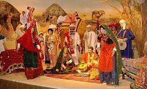
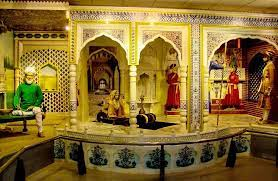
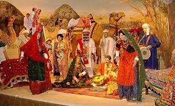
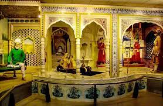

Just a short walk from the Pakistan Monument, I went to Lok Virsa Museum along with my friends. It's a really cool place that tells the stories of Pakistan and other Central Asian countries. Inside, there were things to see both outside and indoors.They have displays that showed the different cultures of Pakistan from all over the country. I listen to old music and watch movies about the culture here. It was all so fun and it's an easy way to learn about the country and its history.
Here are some of the pictures of my visit at Lok Virsa Museum
 



There were also so many stoles of handicrafts out there from where I had alot of shopping.
©2020-2025 TravelwithWashma Blog